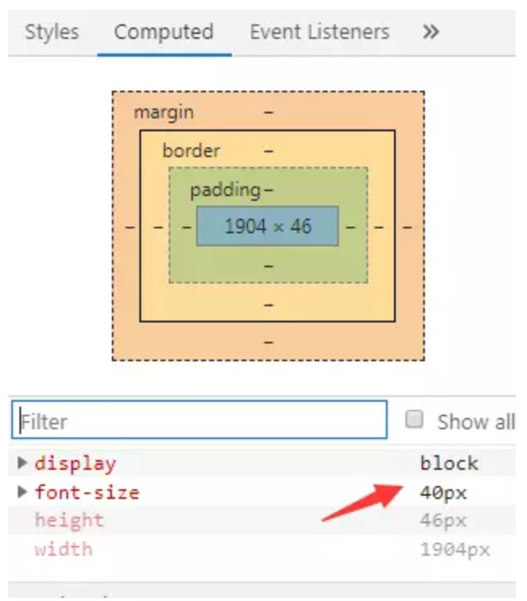
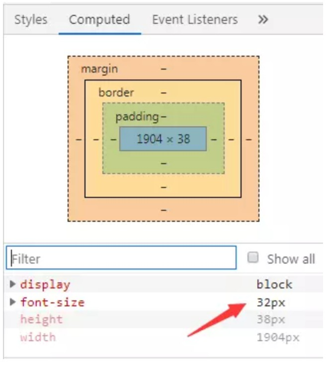

<!DOCTYPE HTML>
<html lang="zh-CN">
<head><meta name="generator" content="Hexo 3.8.0">
    <!--Setting-->
    <meta charset="UTF-8">
    <meta name="viewport" content="width=device-width, user-scalable=no, initial-scale=1.0, maximum-scale=1.0, minimum-scale=1.0">
    <meta http-equiv="X-UA-Compatible" content="IE=Edge,chrome=1">
    <meta http-equiv="Cache-Control" content="no-siteapp">
    <meta http-equiv="Cache-Control" content="no-transform">
    <meta name="renderer" content="webkit|ie-comp|ie-stand">
    <meta name="apple-mobile-web-app-capable" content="王永杰的网络日志">
    <meta name="apple-mobile-web-app-status-bar-style" content="black">
    <meta name="format-detection" content="telephone=no,email=no,adress=no">
    <meta name="browsermode" content="application">
    <meta name="screen-orientation" content="portrait">
    <!-- 自定义视频托管 -->
    <script src="https://player.polyv.net/script/polyvplayer.min.js"></script>
    <link rel="dns-prefetch" href="http://wangyongjie.top">
    <!--SEO-->

    <meta name="keywords" content="适配">


    <meta name="description" content="一、meta-viewport适配1、背景viewport:中文的意思就是“视口”，通常就是浏览器用于显示页面的区域，但是在移动端，viewport一般都要大于浏览器的可视区域，保证PC页面在移...">


<meta name="robots" content="all">
<meta name="google" content="all">
<meta name="googlebot" content="all">
<meta name="verify" content="all">

    <!--Title-->


<title>移动端三种适配方案 | 王永杰的网络日志</title>


    <link rel="alternate" href="/atom.xml" title="王永杰的网络日志" type="application/atom+xml">


    <link rel="icon" href="/favicon.ico">

    


<link rel="stylesheet" href="/css/bootstrap.min.css?rev=3.3.7">
<link rel="stylesheet" href="/css/font-awesome.min.css?rev=4.5.0">
<link rel="stylesheet" href="/css/style.css?rev=@@hash">


    


    <script>
        var _hmt = _hmt || [];
        (function() {
            var hm = document.createElement("script");
            hm.src = "https://hm.baidu.com/hm.js?f42ffe5fed856accbf91820f137dab46";
            var s = document.getElementsByTagName("script")[0];
            s.parentNode.insertBefore(hm, s);
        })();
    </script>


    

</head>

</html>
<!--[if lte IE 8]>
<style>
    html{ font-size: 1em }
</style>
<![endif]-->
<!--[if lte IE 9]>
<div style="ie">你使用的浏览器版本过低，为了你更好的阅读体验，请更新浏览器的版本或者使用其他现代浏览器，比如Chrome、Firefox、Safari等。</div>
<![endif]-->

<body>
    <header class="main-header" style="background-image:url(http://snippet.shenliyang.com/img/banner.jpg)">
    <div class="main-header-box">
        <a class="header-avatar" href="/" title="wangyongjie">
            
        </a>
        <div class="branding">
        	<!--<h2 class="text-hide">Snippet主题,从未如此简单有趣</h2>-->
            
                <h2> 我是谁 我在哪 我在做什么 </h2>
            
    	</div>
    </div>
</header>
    <nav class="main-navigation">
    <div class="container">
        <div class="row">
            <div class="col-sm-12">
                <div class="navbar-header"><span class="nav-toggle-button collapsed pull-right" data-toggle="collapse" data-target="#main-menu" id="mnav">
                    <span class="sr-only"></span>
                        <i class="fa fa-bars"></i>
                    </span>
                    <a class="navbar-brand" href="http://wangyongjie.top">王永杰的网络日志</a>
                </div>
                <div class="collapse navbar-collapse" id="main-menu">
                    <ul class="menu">
                        
                            <li role="presentation" class="text-center">
                                <a href="/"><i class="fa "></i>首页</a>
                            </li>
                        
                            <li role="presentation" class="text-center">
                                <a href="/categories/前端/"><i class="fa "></i>前端</a>
                            </li>
                        
                            <li role="presentation" class="text-center">
                                <a href="/categories/后端/"><i class="fa "></i>后端</a>
                            </li>
                        
                            <li role="presentation" class="text-center">
                                <a href="/categories/工具/"><i class="fa "></i>工具</a>
                            </li>
                        
                            <li role="presentation" class="text-center">
                                <a href="/webnav/"><i class="fa "></i>导航</a>
                            </li>
                        
                            <li role="presentation" class="text-center">
                                <a href="/archives/"><i class="fa "></i>时间轴</a>
                            </li>
                        
                            <li role="presentation" class="text-center">
                                <a href="/message/"><i class="fa "></i>留言板</a>
                            </li>
                        
                            <li role="presentation" class="text-center">
                                <a href="/categories/生活/"><i class="fa "></i>生活</a>
                            </li>
                        
                            <li role="presentation" class="text-center">
                                <a href="/about/"><i class="fa "></i>关于</a>
                            </li>
                        
                    </ul>
                </div>
            </div>
        </div>
    </div>
</nav>
    <section class="content-wrap">
        <div class="container">
            <div class="row">
                <main class="col-md-8 main-content m-post">
                    <p id="process"></p>
<article class="post">
    <div class="post-head">
        <h1 id="移动端三种适配方案">
            
	            移动端三种适配方案
            
        </h1>
        <div class="post-meta">
    
        <span class="categories-meta fa-wrap">
            <i class="fa fa-folder-open-o"></i>
            <a class="category-link" href="/categories/前端/">前端</a>
        </span>
    

    
        <span class="fa-wrap">
            <i class="fa fa-tags"></i>
            <span class="tags-meta">
                
                    <a class="tag-link" href="/tags/适配/">适配</a>
                
            </span>
        </span>
    

    
        
        <span class="fa-wrap">
            <i class="fa fa-clock-o"></i>
            <span class="date-meta">2018/06/03</span>
        </span>
        
    
</div>
            
            
            <p class="fa fa-exclamation-triangle warning">
                本文于<strong>373</strong>天之前发表，文中内容可能已经过时。
            </p>
        
    </div>
    
    <div class="post-body post-content">
        <h3 id="一、meta-viewport适配"><a href="#一、meta-viewport适配" class="headerlink" title="一、meta-viewport适配"></a>一、meta-viewport适配</h3><h4 id="1、背景"><a href="#1、背景" class="headerlink" title="1、背景"></a>1、背景</h4><p>viewport:中文的意思就是“<strong>视口</strong>”，通常就是浏览器用于显示页面的区域，但是在移动端，viewport一般都要大于浏览器的可视区域，保证PC页面在移动页面上面的可视性，这是因为考虑到移动设备的分辨率相对于桌面电脑来说都比较小，所以为了能在移动设备上正常显示那些传统的为桌面浏览器设计的网站，移动设备上的浏览器都会把自己默认的viewport设为980px或1024px（也可能是其它值，这个是由设备自己决定的），这样做是因为许多页面没有做移动端优化，在小窗口渲染时会乱掉（或看起来乱）。所以，这种虚拟视口是一种让未做移动端优化的网站在窄屏设备上看起来更好的办法。</p>
<h4 id="2、三种类型"><a href="#2、三种类型" class="headerlink" title="2、三种类型"></a>2、三种类型</h4><p>1.layoutviewport:  大于实际屏幕，元素的宽度继承于layoutviewport，用于保证网站的外观特性与桌面浏览器一样。</p>
<p>visualviewport: 当前显示在屏幕上的页面，即浏览器可视区域的宽度。</p>
<p>idealviewport: 为浏览器定义的可完美适配移动端的理想 viewport，固定不变，可以认为是设备视口宽度。比如 iphone 7 为 375px, iphone 7p 为 414px。<br>目前最常用的就是第三种，idealviewport,也就是设备宽度多大，css页面的宽度就多大，在移动端使用它非常简单，<br>只要在html页面的<code>head</code>标签之间添加：<br><figure class="highlight html"><table><tr><td class="gutter"><pre><span class="line">1</span><br></pre></td><td class="code"><pre><span class="line"><span class="tag">&lt;<span class="name">meta</span> <span class="attr">name</span>=<span class="string">"viewport"</span> <span class="attr">content</span>=<span class="string">"width=device-width, initial-scale=1.0, minimum-scale=1.0, maximum-scale=1.0, user-scalable=no"</span>/&gt;</span></span><br></pre></td></tr></table></figure></p>
<h4 id="3、五种属性"><a href="#3、五种属性" class="headerlink" title="3、五种属性"></a>3、五种属性</h4><p>其中device-width意思是设备宽度，移动设备默认的viewport是layoutviewport,将width 设置为device-width，就会将宽度切换为idealviewport类型，下来分别说明下各个属性的意思：<br>width:属性控制视口的宽度,可以设置具体的宽度如：width=700，但是一般这么使用，都是使用width=device-width</p>
<figure class="highlight plain"><table><tr><td class="gutter"><pre><span class="line">1</span><br><span class="line">2</span><br><span class="line">3</span><br><span class="line">4</span><br><span class="line">5</span><br><span class="line">6</span><br><span class="line">7</span><br><span class="line">8</span><br></pre></td><td class="code"><pre><span class="line">inital-scale:页面初始缩放值，默认为1；</span><br><span class="line"></span><br><span class="line">maximum-scale：允许用户缩放到的最大比例。</span><br><span class="line"></span><br><span class="line">minimum-scale：允许用户缩放到的最小比例。</span><br><span class="line"></span><br><span class="line">user-scalable：用户是否可以手动缩放。</span><br><span class="line">复制代码</span><br></pre></td></tr></table></figure>
<h3 id="二、媒体查询适配"><a href="#二、媒体查询适配" class="headerlink" title="二、媒体查询适配"></a>二、媒体查询适配</h3><p>媒体查询是第二种移动端适配方案，它属于css3的属性，使用 @media 查询，你可以针对不同的媒体类型定义不同的样式。<br>@media 可以针对不同的屏幕尺寸设置不同的样式，特别是如果你需要设置设计响应式的页面，@media 是非常有用的。<br>当你重置浏览器大小的过程中，页面也会根据浏览器的宽度和高度重新渲染页面。</p>
<h4 id="1、使用方法："><a href="#1、使用方法：" class="headerlink" title="1、使用方法："></a>1、使用方法：</h4><p><code>&lt;link rel=&quot;stylesheet&quot; media=&quot;(max-width: 800px)&quot; href=&quot;example.css&quot; /&gt;</code>可以直接在link标签中插入媒体查询css<br>上面的意思表示如果浏览器可视区域小于等于800px时，就执行example.css中的样式。</p>
<figure class="highlight plain"><table><tr><td class="gutter"><pre><span class="line">1</span><br><span class="line">2</span><br><span class="line">3</span><br><span class="line">4</span><br><span class="line">5</span><br><span class="line">6</span><br><span class="line">7</span><br><span class="line">8</span><br></pre></td><td class="code"><pre><span class="line">&lt;style&gt;</span><br><span class="line">@media (max-width: 600px) &#123;</span><br><span class="line">  body &#123;</span><br><span class="line">    background-color:red;</span><br><span class="line">  &#125;</span><br><span class="line">&#125;</span><br><span class="line">&lt;/style&gt;</span><br><span class="line">复制代码</span><br></pre></td></tr></table></figure>
<p>也可以使用嵌入式css写法,效果同上<br>使用<code>and</code>可以将多个媒体查询属性，如：<br><code>(min-width: 700px) and (orientation: landscape) { ... }</code></p>
<p>表示在宽度小于等于800px且横屏时应用这个css样式</p>
<p>使用<code>，</code>（逗号）可以使得多个媒体查询属性中有任意一个属性符合要求，就应用后面的css样式</p>
<p><code>@media (min-width: 700px), handheld and (orientation: landscape) { ... }</code>表示当符合前一项媒体查询属性或者后一项媒体查询属性时应用后面的css样式</p>
<p>使用<code>not</code>可以排除后面的媒体查询属性，在其余的媒体查询中应用css样式</p>
<p>@media not (max-width:700px){…}表示在宽度大于700px时，应用css样式</p>
<h3 id="三、em和rem动态适配"><a href="#三、em和rem动态适配" class="headerlink" title="三、em和rem动态适配"></a>三、em和rem动态适配</h3><p>em和rem都是相对单位长度，<strong>em</strong>是相对父级<code>font-size</code>来变化的，他会继承父级元素的字体大小，代表倍数，<br>如：浏览器默认font-size:16px,那么em就是1em，</p>
<figure class="highlight html"><table><tr><td class="gutter"><pre><span class="line">1</span><br><span class="line">2</span><br><span class="line">3</span><br><span class="line">4</span><br><span class="line">5</span><br><span class="line">6</span><br><span class="line">7</span><br><span class="line">8</span><br><span class="line">9</span><br><span class="line">10</span><br><span class="line">11</span><br><span class="line">12</span><br><span class="line">13</span><br><span class="line">14</span><br><span class="line">15</span><br><span class="line">16</span><br><span class="line">17</span><br><span class="line">18</span><br><span class="line">19</span><br></pre></td><td class="code"><pre><span class="line"><span class="meta">&lt;!DOCTYPE html&gt;</span></span><br><span class="line"><span class="tag">&lt;<span class="name">html</span>&gt;</span></span><br><span class="line"><span class="tag">&lt;<span class="name">head</span>&gt;</span></span><br><span class="line">  <span class="tag">&lt;<span class="name">meta</span> <span class="attr">charset</span>=<span class="string">"utf-8"</span>&gt;</span></span><br><span class="line">  <span class="tag">&lt;<span class="name">title</span>&gt;</span>JS Bin<span class="tag">&lt;/<span class="name">title</span>&gt;</span></span><br><span class="line">  <span class="tag">&lt;<span class="name">style</span>&gt;</span><span class="undefined"></span></span><br><span class="line"><span class="undefined">  body&#123;</span></span><br><span class="line"><span class="css">    <span class="selector-tag">font-size</span><span class="selector-pseudo">:20px</span>;</span></span><br><span class="line"><span class="undefined">  &#125;</span></span><br><span class="line"><span class="undefined">    div&#123;</span></span><br><span class="line"><span class="css">     <span class="selector-tag">font-size</span><span class="selector-pseudo">:2em</span></span></span><br><span class="line"><span class="undefined">    &#125;</span></span><br><span class="line"><span class="undefined">  </span><span class="tag">&lt;/<span class="name">style</span>&gt;</span></span><br><span class="line"><span class="tag">&lt;/<span class="name">head</span>&gt;</span></span><br><span class="line"><span class="tag">&lt;<span class="name">body</span>&gt;</span></span><br><span class="line"><span class="tag">&lt;<span class="name">div</span>&gt;</span>nihao<span class="tag">&lt;/<span class="name">div</span>&gt;</span></span><br><span class="line"><span class="tag">&lt;/<span class="name">body</span>&gt;</span></span><br><span class="line"><span class="tag">&lt;/<span class="name">html</span>&gt;</span></span><br><span class="line">复制代码</span><br></pre></td></tr></table></figure>
<p><br><!-- <figure> --></p>
<p><figcaption></figcaption><br>当给body设置font-size：20px，后，div设置font-size：2em，div的font-size实际变成了40px,</p>
<p>不过在实际布局中，如果嵌套过深，em计算起来比较的繁琐，容易出现错误，因此不见大范围使用，小范围可以结合其它长度单位来使用，</p>
<p><strong>rem</strong>是相对于html根元素<code>font-size</code>来变化的，始终是基于根元素字体大小，也代表倍数，浏览器默认的font-size为16px,那么rem单位就是1rem；</p>
<figure class="highlight html"><table><tr><td class="gutter"><pre><span class="line">1</span><br><span class="line">2</span><br><span class="line">3</span><br><span class="line">4</span><br><span class="line">5</span><br><span class="line">6</span><br><span class="line">7</span><br><span class="line">8</span><br><span class="line">9</span><br><span class="line">10</span><br><span class="line">11</span><br><span class="line">12</span><br><span class="line">13</span><br><span class="line">14</span><br><span class="line">15</span><br><span class="line">16</span><br><span class="line">17</span><br><span class="line">18</span><br></pre></td><td class="code"><pre><span class="line"><span class="meta">&lt;!DOCTYPE html&gt;</span></span><br><span class="line"><span class="tag">&lt;<span class="name">html</span>&gt;</span></span><br><span class="line"><span class="tag">&lt;<span class="name">head</span>&gt;</span></span><br><span class="line">  <span class="tag">&lt;<span class="name">meta</span> <span class="attr">charset</span>=<span class="string">"utf-8"</span>&gt;</span></span><br><span class="line">  <span class="tag">&lt;<span class="name">title</span>&gt;</span>JS Bin<span class="tag">&lt;/<span class="name">title</span>&gt;</span></span><br><span class="line">  <span class="tag">&lt;<span class="name">style</span>&gt;</span><span class="undefined"></span></span><br><span class="line"><span class="undefined">  body&#123;</span></span><br><span class="line"><span class="css">    <span class="selector-tag">font-size</span><span class="selector-pseudo">:20px</span>;</span></span><br><span class="line"><span class="undefined">  &#125;</span></span><br><span class="line"><span class="undefined">    div&#123;</span></span><br><span class="line"><span class="css">     <span class="selector-tag">font-size</span><span class="selector-pseudo">:2rem</span></span></span><br><span class="line"><span class="undefined">    &#125;</span></span><br><span class="line"><span class="undefined">  </span><span class="tag">&lt;/<span class="name">style</span>&gt;</span></span><br><span class="line"><span class="tag">&lt;/<span class="name">head</span>&gt;</span></span><br><span class="line"><span class="tag">&lt;<span class="name">body</span>&gt;</span></span><br><span class="line"><span class="tag">&lt;<span class="name">div</span>&gt;</span>nihao<span class="tag">&lt;/<span class="name">div</span>&gt;</span></span><br><span class="line"><span class="tag">&lt;/<span class="name">body</span>&gt;</span></span><br><span class="line"><span class="tag">&lt;/<span class="name">html</span>&gt;</span></span><br></pre></td></tr></table></figure>
<p><br><!-- <figure> --></p>
<p><figcaption></figcaption><br>当给body设置为font-size：20px，给div设置为font-size:2rem,div的实际font-size变成了32px,在移动端布局中使用rem，由于它是基于根元素的，所以只要根元素不发生变化，那么页面就不会发生变化，同时呢也没有em的繁琐嵌套计算，在配合上动态计算rem的javascript代码，使之在移动端布局中广受欢迎，<br>使用如下javascript代码即可动态计算</p>
<figure class="highlight js"><table><tr><td class="gutter"><pre><span class="line">1</span><br><span class="line">2</span><br><span class="line">3</span><br><span class="line">4</span><br><span class="line">5</span><br><span class="line">6</span><br><span class="line">7</span><br><span class="line">8</span><br><span class="line">9</span><br><span class="line">10</span><br><span class="line">11</span><br><span class="line">12</span><br><span class="line">13</span><br><span class="line">14</span><br><span class="line">15</span><br><span class="line">16</span><br><span class="line">17</span><br></pre></td><td class="code"><pre><span class="line">(<span class="function"><span class="keyword">function</span>(<span class="params">win</span>) </span>&#123;</span><br><span class="line">	<span class="keyword">var</span> doc = win.document;</span><br><span class="line">	<span class="keyword">var</span> docEl = doc.documentElement;</span><br><span class="line">	<span class="keyword">var</span> tid;</span><br><span class="line">	<span class="function"><span class="keyword">function</span> <span class="title">refreshRem</span>(<span class="params"></span>) </span>&#123;</span><br><span class="line">		<span class="keyword">var</span> width = docEl.getBoundingClientRect().width;        </span><br><span class="line">		<span class="keyword">if</span> (width &gt;=<span class="number">750</span>) width = <span class="number">750</span>;</span><br><span class="line">		<span class="keyword">if</span>(width&lt;=<span class="number">320</span>) width=<span class="number">320</span>;</span><br><span class="line">		<span class="keyword">var</span> rem = width / <span class="number">7.5</span>;</span><br><span class="line">		docEl.style.fontSize = rem + <span class="string">'px'</span>;		</span><br><span class="line">	&#125;</span><br><span class="line">	win.addEventListener(<span class="string">'resize'</span>, <span class="function"><span class="keyword">function</span>(<span class="params"></span>) </span>&#123;</span><br><span class="line">		clearTimeout(tid);</span><br><span class="line">		tid = setTimeout(refreshRem, <span class="number">300</span>);</span><br><span class="line">	&#125;, <span class="literal">false</span>);</span><br><span class="line">	refreshRem();</span><br><span class="line">&#125;)(<span class="built_in">window</span>);</span><br></pre></td></tr></table></figure>
<p>在手机端和平板上面尺寸支持良好，虽然rem的使用看上去十分完美，但是在一些需要固定间距的地方使用会造成页面错乱或者样式出错，这种情况下建议搭配px来使用，另外<br>多种长度单位搭配使用，可以解决一些单一长度单位布局带来的bug，</p>
<p><br><strong>本文作者</strong>：王永杰<br><strong>本文地址</strong>： <a href="http://wangyongjie.top/blog/57596/">http://wangyongjie.top/blog/57596/</a> <br><strong>版权声明</strong>：本博客所有文章除特别声明外，均采用 <a href="http://creativecommons.org/licenses/by-nc-sa/3.0/cn/" target="_blank" rel="noopener">CC BY-NC-SA 3.0 CN</a> 许可协议。转载请注明出处！</p>

    </div>
    
        <div class="reward" ontouchstart>
    <div class="reward-wrap">赏
        <div class="reward-box">
            
                <span class="reward-type">
                    <b>支付宝打赏</b>
                </span>
            
            
                <span class="reward-type">
                    <b>微信打赏</b>
                </span>
            
        </div>
    </div>
    <p class="reward-tip">一分也是爱</p>
</div>


    
    <div class="post-footer">
        <div>
            
                转载声明：商业转载请联系作者获得授权,非商业转载请注明出处 <a href="http://wangyongjie.top" target="_blank"> http://wangyongjie.top</a>
            
        </div>
        <div>
            
        </div>
    </div>
</article>

<div class="article-nav prev-next-wrap clearfix">
    
        <a href="/blog/10223/" class="pre-post btn btn-default" title="js创建对象的几种方法及继承">
            <i class="fa fa-angle-left fa-fw"></i><span class="hidden-lg">上一篇</span>
            <span class="hidden-xs">js创建对象的几种方法及继承</span>
        </a>
    
    
        <a href="/blog/30954/" class="next-post btn btn-default" title="零配置命令行HTTP服务器">
            <span class="hidden-lg">下一篇</span>
            <span class="hidden-xs">零配置命令行HTTP服务器</span><i class="fa fa-angle-right fa-fw"></i>
        </a>
    
</div>


    <div id="comments">
        
	
<div id="lv-container" data-id="city" data-uid="MTAyMC8zNDc5OS8xMTMzNg==">
  <script type="text/javascript">
     (function(d, s) {
         var j, e = d.getElementsByTagName(s)[0];
         if (typeof LivereTower === 'function') { return; }
         j = d.createElement(s);
         j.src = 'https://cdn-city.livere.com/js/embed.dist.js';
         j.async = true;
         e.parentNode.insertBefore(j, e);
     })(document, 'script');
  </script>
</div>


    </div>


                </main>
                
                    <aside id="article-toc" role="navigation" class="col-md-4">
    <div class="widget">
        <h3 class="title">文章目录</h3>
        
            <ol class="toc"><li class="toc-item toc-level-3"><a class="toc-link" href="#一、meta-viewport适配"><span class="toc-text">一、meta-viewport适配</span></a><ol class="toc-child"><li class="toc-item toc-level-4"><a class="toc-link" href="#1、背景"><span class="toc-text">1、背景</span></a></li><li class="toc-item toc-level-4"><a class="toc-link" href="#2、三种类型"><span class="toc-text">2、三种类型</span></a></li><li class="toc-item toc-level-4"><a class="toc-link" href="#3、五种属性"><span class="toc-text">3、五种属性</span></a></li></ol></li><li class="toc-item toc-level-3"><a class="toc-link" href="#二、媒体查询适配"><span class="toc-text">二、媒体查询适配</span></a><ol class="toc-child"><li class="toc-item toc-level-4"><a class="toc-link" href="#1、使用方法："><span class="toc-text">1、使用方法：</span></a></li></ol></li><li class="toc-item toc-level-3"><a class="toc-link" href="#三、em和rem动态适配"><span class="toc-text">三、em和rem动态适配</span></a></li></ol>
        
    </div>
</aside>

                
            </div>
        </div>
    </section>
    <footer class="main-footer">
    <div class="container">
        <div class="row">
        </div>
    </div>
</footer>

<a id="back-to-top" class="icon-btn hide">
	<i class="fa fa-chevron-up"></i>
</a>


    <div class="copyright">
    <div class="container">
        <div class="row">
            <div class="col-sm-12">
                <div class="busuanzi">
    
</div>

            </div>
            <div class="col-sm-12">
                <span>Copyright &copy; 2019
                </span> |
                <span>
                    Powered by <a href="//hexo.io" class="copyright-links" target="_blank" rel="nofollow">Hexo</a>
                </span> |
                <span>
                    Theme by <a href="//github.com/shenliyang/hexo-theme-snippet.git" class="copyright-links" target="_blank" rel="nofollow">Snippet</a>
                </span>
            </div>
        </div>
    </div>
</div>


<script src="/js/app.js?rev=@@hash"></script>

</body>
</html>